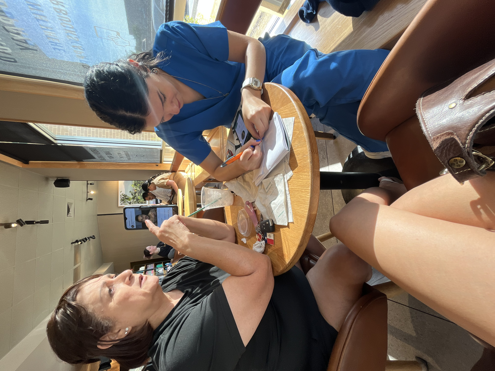
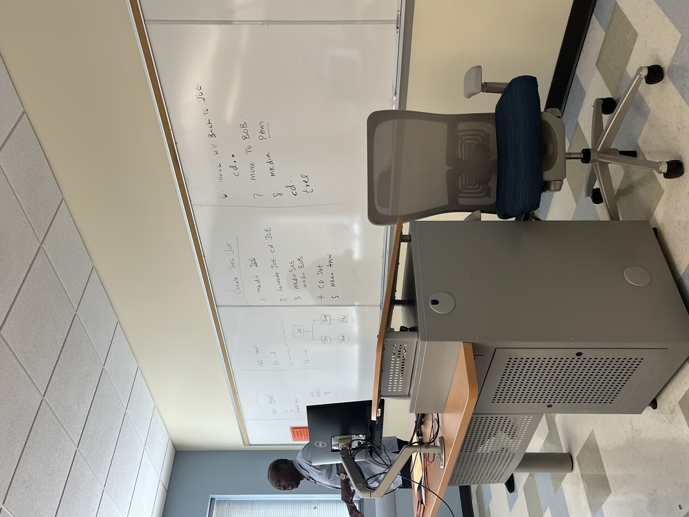
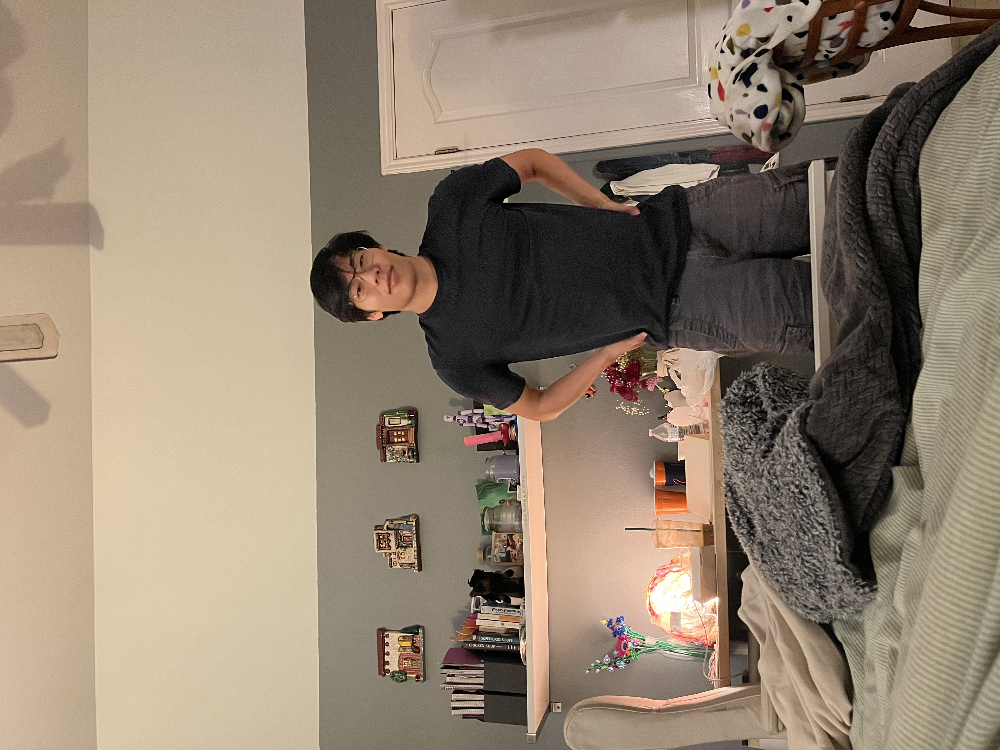
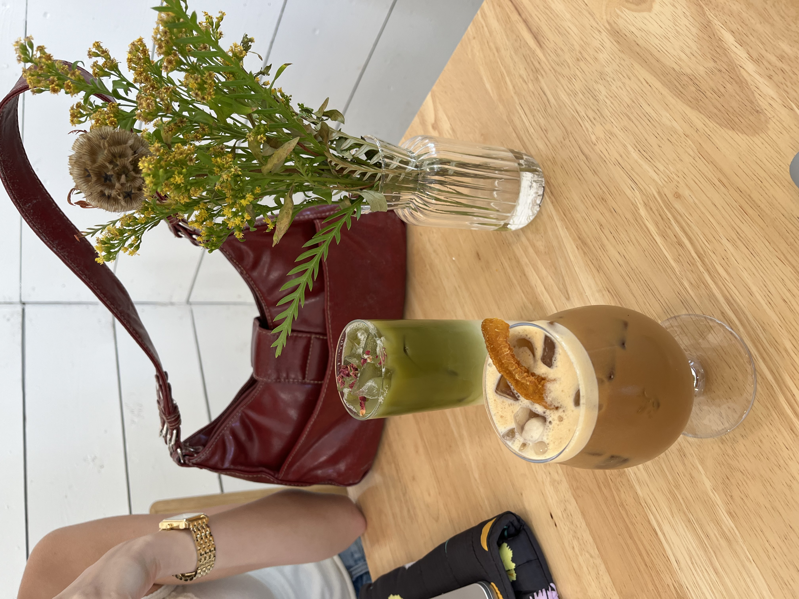
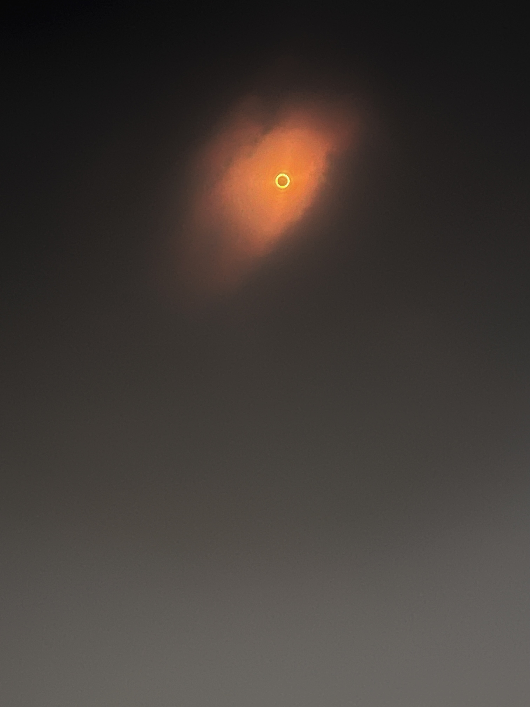
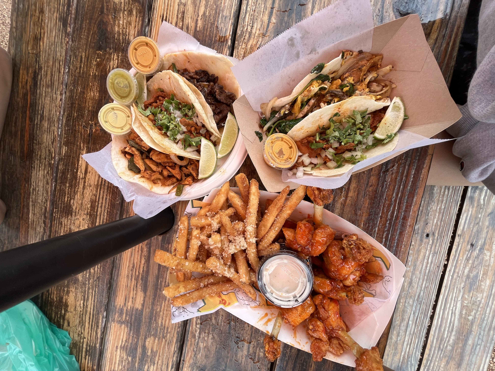
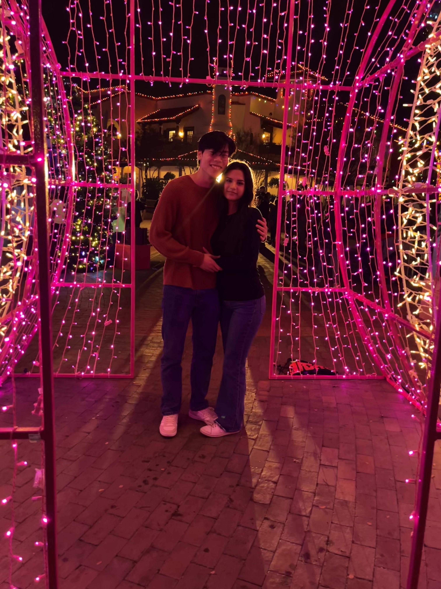
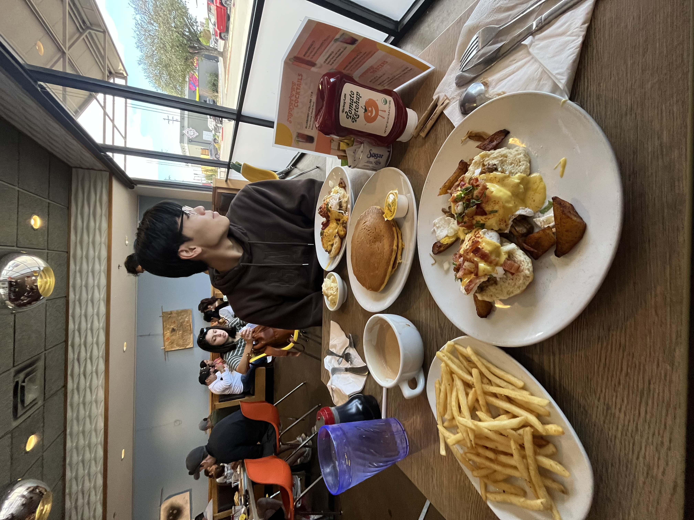

My 2023 Fall Semester
Coffee with my Mom and Sister
September 1st, 2023
I met up with my sister, Lili with my mom during her lunch break! We got bored and started drawing on the wrappers.
It was still really hot outside. No surprise for Texas.
Professor Onobajo
September 7th, 2023
This is at the ACC Round Rock Campus, with my UNIX Professor, Onobajo. I really enjoyed having him
This campus is really beautiful, especially in the Fall.
My Boyfriend
September 21th, 2023
This is my boyfriend Vincent. We've been together for 4 years now. This picture was right after a date!
He is my best friend and my favorite person in the World.
Ani's Coffee
October 4th, 2023
I went to this coffee shop with my cousin Alexia, the drive was a really long one and I got scared on the way.
The drinks were actually terrible, I even got another one to try and it was trash.
Foodtruck

October 4th, 2023
This was right outside the coffee shop, it was very aesthetic.
We did not get food here, it was way overpriced.
After Class

October 9th, 2023
This was after my last class of the day and I wanted to capture how I looked at the moment.
A little sweaty I would say.
Ring of Fire
October 14, 2023
I went with my boyfriend and his dad to San Antonio to see the full ring. They were as excited as little kids!
This is when I discovered the joy of bread.. butter.. sugar.
CHRIS STAPLETON
October 20, 2023
This was my very first concert and I loved it! I was so excited to see him and I had the best time with my sister there.
My picture on the home page is from this same concert.
Tacos
October 24th, 2023
After rock climbing at Crux with my boyfriend, sister, and brother, we went across the street to get coffee and this food!
It was super good, but I got full pretty fast.
Six Flags
November 18th, 2023
I went to Six Flags with my boyfriend and spent the whole day riding as many roller coasters as wel could. It was such an amazing day and much needed.
I told my parents I was at work while doing this. They would've freaked out!
Kerbey
November 29th, 2023
This was a little breakfast date with my boyfriend at Kerbey Lane. Their egg benedicts are the way to go.
Definitely a go-to spot for me.
Wrapped

November 30th, 2023
My wrapped year for music! Super exciting as I had a bit of a country influence this year.
Don't think Rap was the right genre for me but I guess.